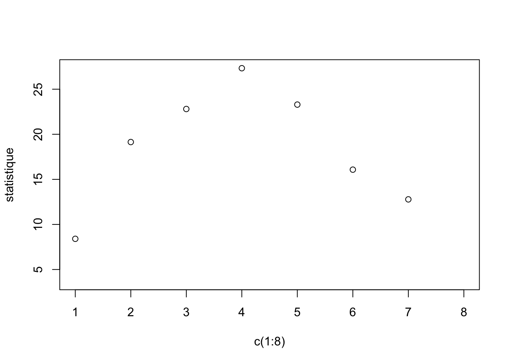

Chapter 3 Révision Test du χ²
3.1 QCM
Le test du chi2 se réalise lorsque les deux variables sont :Afficher la réponse
QualitativesH0 signifie que les variables sont dépendantes.
Afficher la réponse
Faux (H0 : les variables sont indépendantes)Si la statistique de test du chi2 est grande alors sa p.value sera :
Afficher la réponse
FaibleUne variable qualitative possède toujours 2 modalités :
Afficher la réponse
Faux (elle peut avoir un grand nombre de modalités)Une probabilité est comprise entre -1 et 1 :
Afficher la réponse
Faux (elle possède une valeur entre 0 et 1)Ce test statistique se base sur quel paramètre de position :
Afficher la réponse
Aucun3.2 Questions ouvertes (définitions)
Quel est le principe du calcul de la statistique de ce test ?Afficher la réponse
Le principe est de comparer les probabilités observées (Observed) et les probabilités attendues (Expected) sous H0 (c’est-à-dire lorsque les variables sont totalement indépendantes).Donner la définition de H0 (Hypothèse Nulle) ?
Afficher la réponse
L’hypothèse nulle correspond à la situation où il n’existe aucune différence entre les conditions expérimentales ou bien que les groupes de variables étudiés soient indépendants.Le refus de H0 implique une prise de risque. Expliquez de manière vulgarisée.
Afficher la réponse
Le refus de H0 s’effectue après avoir pris connaissance de la p value. Plus la p value tend vers 0, plus le phénomène est rare sous H0.La p value mesure le risque que l’on prend à rejeter H0 à tort.
Exemple : si p = 0.04, rejeter H0 signifie que l’on prend un risque de 4 % de se tromper.
3.3 Problème
Décrivez de manière littéraire la case bleue.Afficher la réponse
La case bleue nous donne le nombre de patients qui sont classés comme étant SAINS par les deux médecins.Quelle est la probabilité d’être classé MALADES par le médecin expérimenté lorsque le jeune médecin classe les patients comme étant MALADES ?
Afficher la réponse
95 / (10+95) = 95 %Quelle est la probabilité d’être classé SAINS par le jeune médecin lorsque le médecin expérimenté les classe comme étant MALADES ? Que pouvez-vous dire de l’évaluation du jeune médecin ?
Afficher la réponse
5 / (5+95) = 5 %→ Le jeune médecin se trompe dans 5 % des cas en sous-classant des malades en sains.
Définir H0 ? Puis définir H1 ?
Afficher la réponse
H0 : Les deux classifications effectuées par les médecins sont indépendantes (dissimilaires).H1 : Les deux classifications effectuées par les médecins sont dépendantes (proches).
Calculer les probabilités de classification du jeune médecin sous H0 ?
Afficher la réponse
- SAINS : 47,5 %
- MALADES : 52,5 %
Calculer la statistique de test pour le carré orange ?
Afficher la réponse
Statistique de test (carré orange) = … (donnée dans l’énoncé, non précisée ici).La statistique du test définit une p value proche de 0.01. Conclure.
Afficher la réponse
On rejette H0 au seuil de 5 %.→ Les deux médecins classent de manière significativement proche.
3.3.1 Applications
3.3.1.1 Pokemons
Refaire l’ensemble des analyses avec un jeu de données concernant les Pokemons provenant de https://www.data.gouv.fr/fr/datasets/jeu-de-donnees-sur-les-pokemons/. Je vous mets à disposition une table à double entrée où sont présentés deux variables : (1) Le pokémon possède 1 ou 2 types (Roche, Eau, Feu, Plantes, etc…) et (2) le pokémon possède une évolution (Oui ou Non).
| Evolution // nb de type | 1 type | 2 types |
|---|---|---|
| Oui | 51 | 59 |
| Non | 64 | 41 |
Quelles sont les variables ?
Poser \(H_0\) et \(H_1\) ?
Réprésenter les résultats sous forme de graphique ?
Définir l’erreur de type 1 ?
Quelle conclusion ?
3.3.1.2 TP n°1
Dans ce premier TP, votre objectif sera de déterminer le nombre d’heures de sports à réaliser par semaine associé avec un risque faible de développer une pathologie cardiovasculaire.
L’objetif sous jacent de ce TP est de se familiriser avec la simulation des données par conséquent toutes les conclusions seront scienfitiquement infondées.
Pour avoir accès à des résultats scientifiques fondés sur ce sujet, je vous invite à lire la review suivante : AHAJournal.
Votre objectif est donc de déterminer un seuil concernant la pratique d’AP.
3.3.1.2.1 Partie simulation
- Définir une seed à 12 avec la fonction set.seed()
- Définir un nombre de sujets à 200 que vous enregistrerez dans un objet n.
- Simuler pour les n sujets un nombre d’heures de sport par semaine, grâce à une loi de poisson avec un lamdba de 4.2. Nous ajouterons un bruit gaussien.
Quelle type de variable ?
Visualiser l’hétérogénéité de la variable activité physique, i.e. PA.
Définir un risque de développer une pathologie cardiovasculaire. La variable Risk comprendra 2 modalités (“Pas de risque” et “risque”). Vous devrez la créer à partir d’une loi binomiale où la probabilité de ne pas développer de risque (i.e. Pas de risque = 1) sera proportionnelle au niveau d’activité physique.
Utiliser la fonction rbinom() pour introduire une probabilité de développé une pathologie cardiaque | nb heures de sport.
## Warning in rbinom(1, 1, PA[i]/10 + (0.1)): NAs produced
## Warning in rbinom(1, 1, PA[i]/10 + (0.1)): NAs produced
## Warning in rbinom(1, 1, PA[i]/10 + (0.1)): NAs produced
## Warning in rbinom(1, 1, PA[i]/10 + (0.1)): NAs produced
## Warning in rbinom(1, 1, PA[i]/10 + (0.1)): NAs produced
## Warning in rbinom(1, 1, PA[i]/10 + (0.1)): NAs produced
## Warning in rbinom(1, 1, PA[i]/10 + (0.1)): NAs produced
## Warning in rbinom(1, 1, PA[i]/10 + (0.1)): NAs produced
## Warning in rbinom(1, 1, PA[i]/10 + (0.1)): NAs produced# Renommer la variable Risk (R) pour que le 1 soit égal à pas de risque.
# Renommer la variable Risk (R) pour que le 0 soit égal à risque.
Risk[Risk==1]="Pas_de_risque" ; Risk[Risk==0]="risque"- Quelle type de variable ?
3.3.1.2.2 Partie test statistique
- Visualiser les données ensemble.
- Quelle est la probabilité d’avoir un risque de développer une pathologie cardiaque en fonction de la pratique du sport ?
- Réaliser une boucle pour nb_PA étant le nombre d’heure de sport allant de 1 à 8 heures par semaine pour déterminer la probabilité d’avoir un risque de développer une pathologie cardiaque.
P_risk = NULL
for (nb_PA in 1:8){
P_risk <- c(P_risk, table(data.frame(Risk, PA>=nb_PA))[2,2]/sum(table(data.frame(Risk, PA>=nb_PA))[,2]))
}- Réaliser un graphique de la prababilité du risque en fonction de la pratique d’activité physique.

Quel seuil pourrions vous définir ?
Utiliser le test du CHI2 pour vous aider à prendre une décision. Définir les hypothèses du test ? À quelle réponse serions nous capable de répondre ?
–> Est-ce que la proportion de sujet actif (seuil choisi) est la même dans le groupe “risque” que dans le groupe “pas de risque” ?
Cette question porte sur la relation entre les deux variables.
- Réaliser une boucle pour nb_PA étant le nombre d’heure de sport allant de 1 à 8 heures par semaine pour déterminer la statistique de test et la p value du test du CHI2
p.value = statistique = NULL
for (nb_PA in 1:8){
statistique <- c(statistique, chisq.test(table(data.frame(Risk, PA>=nb_PA)))$statistic)
p.value <- c(p.value, chisq.test(table(data.frame(Risk, PA>=nb_PA)))$p.value)
}## Warning in chisq.test(table(data.frame(Risk, PA >= nb_PA))): Chi-squared
## approximation may be incorrect
## Warning in chisq.test(table(data.frame(Risk, PA >= nb_PA))): Chi-squared
## approximation may be incorrect- Réaliser un graphique de la statistique du test en fonction de la pratique d’activité physique en colorant les points en fonction de la p.value.

- Dans quelle condition les variables sont les plus dépendantes entre elles.
## [1] 4- Visualiser la table de confusion à l’aide de la fonction barplot() avec le seuil choisi en ajoutant les résultats du test statistique (statistique du test + p value).
- Que peut-on conclure ?